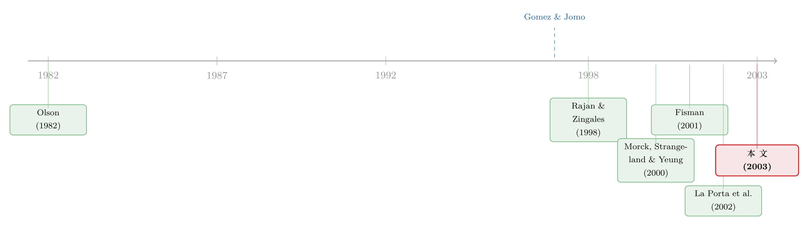

资本管制这道帘子，是为谁拉上的？
本文读的是 Johnson & Mitton (2003, Journal of Financial Economics)：1998 年 9 月马来西亚重新祭出资本管制，表面上是抵御「投机攻击」的宏观工具，实际上却像一道帘子——拉上之后，政府得以在帘子后面继续给政治关联企业输血。用危机前后的股价变化，作者把这道帘子的「受益人」一个个点了出来：与首相马哈蒂尔关系最铁的那批公司，单单 1998 年 9 月一个月，市值就因「关系」一项凭空多涨了约三成。
1 一个尴尬的成功
先讲一个让经济学家集体不舒服的事实。
1998 年 9 月，当整个东亚还在亚洲金融危机的泥潭里挣扎时，马来西亚做了一件「政治不正确」的事：它把已经开放多年的资本账户重新关上，对资本外流实施 资本管制 (capital controls)。这在当时是逆潮流而动——从 1980 年代起，IMF 和世界银行一路鼓吹资本市场开放，到 1990 年代初，资本管制几乎被宣判为「过时的政策工具」(Bhagwati, 1998a)。
可偏偏马来西亚管制之后，经济反而稳住了、反弹了。于是有人（Kaplan and Rodrik, 2001）说：你看，资本管制是有用的，至少在宏观层面挡住了恐慌性的资本外逃。Krugman (1998) 更早就论证过，当一国遭遇纯粹的市场恐慌、常规手段又失灵时，临时管制资本可能是稳定经济的有效一招。
这就是关于资本管制的第一种视角——它讲的是宏观、是总量、是「全体企业」。
但本文的两位作者偏不满足于此。他们追问了一个更刁钻、也更扎心的问题：资本管制稳住的，到底是「整个经济」，还是「某些人」？
接着，一个自然的问题是：如果管制真的偏心了某些人，那「某些人」是谁，又凭什么是他们？这就把我们从宏观拽到了第二种视角——制度 (institutions)。
2 把「裙带关系」翻译成一个可检验的假说
第二种视角的思想源头是 Olson (1982)。他的核心论断是：一个长期稳定的社会，会慢慢长出有组织的、寻租的利益集团；这些「特殊利益组织」总体上拉低效率、侵蚀总收入。Morck, Strangeland, and Yeung (2000a) 把这套逻辑接到了资本流动上——他们发现，1988 年加拿大-美国自由贸易协定降低了外资壁垒之后，那些根基深厚、靠家族继承控制的「老钱」企业，反而出现了显著为负的异常收益。壁垒一拆，被保护的低效企业就受伤。
把这条逻辑反过来推，就得到本文的出发点：如果资本壁垒（管制）保护了被偏爱的企业，那么资本管制就应该和「裙带主义 (cronyism)」的上升联系在一起。 这里的裙带主义，作者定义得很干脆——就是企业通过政治偏袒所能拿到的资源。
于是在企业层面，这套大叙事被压缩成两条可检验的含义 (testable implications)：
- 含义一：当一个宏观冲击削弱了政府提供补贴的能力时，政治关联越强的企业，受伤越重（因为它们手里那张「关系」的期权贬值了）。
- 含义二：当资本管制让政府重新有能力发放补贴时，政治关联越强的企业，受益越大。
这是全文的「一个核心」。后面所有的数据、回归、稳健性，都是在反复夯实这两句话。
3 为什么是马来西亚？——一个近乎理想的实验室
要检验上面两条含义，你需要三样东西：一份危机前就编好的、不受事后诸葛亮污染的政治关联名单；一个能把「关系」的价值变化映射出来的活跃市场；以及一次让「关系」突然变贵或变贱的外生冲击。马来西亚恰好三样都有。
第一，关联名单是现成的、而且是「干净」的。 Gomez and Jomo (1997) 在亚洲危机爆发之前就完成了一部详尽的马来西亚政商关系研究。作者把书里逐字搜出来——凡被点名与马哈蒂尔 (Mahathir)、戴姆 (Daim)、安瓦尔 (Anwar) 这三位核心人物关系密切的企业，就编码为「政治关联」。
这里最妙的一笔在于关系的来源是「偶然的私人交情」。按 Gomez and Jomo 的考据，这些关联大多源于政客发迹前的早年友谊、同窗、旧识——比如安瓦尔与 Kamaruddin Jaafar 是马来学院的同学，戴姆与 Tajudin Ramli 的交情早在戴姆掌权之前就结下了。关键是：这些私人关系大多早于个人与具体企业的绑定。所以「这家公司关联的是谁」，并不是由公司本身的某种不可观测特征决定的——这正是识别赖以成立的基石。
第二，市场够大够活。 整个危机期间，马来西亚维持着一个规模可观、流动性充足的股市，用股价横截面差异来度量政策冲击是站得住脚的。
第三，也是真正关键的一步——一次外生的政治冲击。 1998 年 9 月，资本管制的实施恰好撞上一场重大政治洗牌：首相马哈蒂尔赢了，副首相安瓦尔输了（被解职、随后入狱）。这就把「政治关联」这一团模糊的东西，劈成了两半：赢家的关系和输家的关系。
于是反转出现了。在危机第一阶段，与马哈蒂尔关联和与安瓦尔关联是近乎完美的替代品——作者明说，找不到任何证据表明靠近其中一个比靠近另一个更值钱。可一旦 9 月这把刀落下，赢家关系和输家关系的价值就此分道扬镳。这个「赢家相对于输家的超额收益」，给裙带主义提供了一把异常干净的尺子：因为两组企业在危机前别无二致，事后的系统性业绩差异，只能归因于政治关联相对价值的变化。
4 数据与方法：朴素到近乎笨拙
样本是 1999 年 10 月版 Worldscope 数据库里所有有起码数据的马来西亚企业，共 424 家，代表了吉隆坡交易所主板的上市公司。所有企业特征都用危机前的最后可得数据来度量；之所以用更晚的 1999 年版本，是因为 Worldscope 收录的企业逐年增多，而危机前已被收录的企业到 1999 年 10 月无一掉队——这样就避免了存活偏差导致的样本选择问题。
危机期的划法也很讲究：起点是 1997 年 7 月 2 日泰铢贬值（公认的亚洲危机起点），终点兼反弹起点是 1998 年 9 月 2 日资本管制落地（股指由此转入持续上行）。
方法上，作者选择了一条朴素到近乎笨拙的路：用含股利的月度股票收益率（以马来西亚林吉特计），而不去算什么基于历史 beta 的异常收益。原因很现实——数据所限，样本里很多企业根本算不出危机前的 beta（即便只要求 24 个月价格历史，也只有 65% 的企业能算）。所以他们干脆把可能影响预期收益的因素直接塞进回归：杠杆、规模、行业（13 个行业里放 12 个虚拟变量），外加一个「是否 Bumiputera（土著）控股」的虚拟变量。
这里有个容易被忽视的细节：作者特意指出，Gomez and Jomo 多半盯的是最大、关系最强的那批企业；而大企业在危机里股价整体表现更好。这意味着——如果偏差存在，方向恰恰是让「关联企业表现更差」更难被发现。换句话说，样本本身的偏差是在跟作者的假说作对，这反而让结论更可信。
5 主要结果：把「关系」明码标价
现在来看作者究竟挖出了什么。
第一阶段（1997 年 7 月–1998 年 8 月）：关系是负资产。 政治关联企业的收益显著更差。这有多差？作者给了一个极有画面感的标尺：拥有政治关联对股价的拖累，相当于把企业的债务-资产比 (debt-asset ratio) 提高 50–60 个百分点——即从中位数的 23.3% 一路抬到约 75%，大致是 2 个标准差的杠杆增幅。把这笔账推到总量上：政治关联企业在这一阶段约 $60 billion 的市值损失里，大约 9% 可以归因于其政治关系预期价值的下跌。
第二阶段（1998 年 9 月）：关系咸鱼翻身，但只翻了一半人的身。 资本管制一落地，关联企业平均而言表现转好。但真正点睛的是那次「赢家 vs 输家」的劈分——只有此前与马哈蒂尔关联的企业经历了股价的超常上涨，安瓦尔关联企业则没有。具体地，马哈蒂尔关联企业当月约 $5 billion 的市值收益里，大约 32% 可归因于关系价值的回升。到 1998 年 9 月底，对这些关联企业而言，政治关系的价值约占其总市值的 17%。
而股市的这次「站队」，后来被现实一一兑现：接下来的一年里，安瓦尔关联企业要么被马哈蒂尔关联企业收购，要么干脆掉头改换门庭、转投马哈蒂尔阵营。市场没有猜错。
把这两段连起来，那道「帘子」的形状就清晰了：宏观冲击削弱了政府的补贴能力 → 所有关联企业一起贬值（含义一）；资本管制重建了补贴能力，但补贴只流向赢家 → 唯独马哈蒂尔关联企业增值（含义二）。资本管制提供的，是一道屏障，让被偏爱的企业可以在屏障之后被继续供养。
一个常见的误读是把这篇文章读成「资本管制是坏政策」。作者其实非常克制：他们没有否认宏观层面的稳定效应，只是指出，在总量故事之外，还藏着一条分配的暗线——同样一项政策，对不同企业意味着天壤之别。这与 Kaplan and Rodrik (2001) 并不矛盾，后者关注的是「对所有企业」的宏观效应，而本文盯的是「只对某些企业」的差别化好处。
6 文献脉络
这篇文章站在三条线的交汇处。
第一条线，是「制度与寻租」。 源头是 Olson (1982) 关于稳定社会滋生寻租利益集团的论断；Morck, Strangeland, and Yeung (2000a) 把它落到资本流动上，用加拿大「老钱」企业在自由贸易冲击下的负收益，给「被保护的低效企业」拍了张实证快照。本文等于是把这套逻辑搬到了资本管制的语境里。
第二条线，是「给政治关系标价」。 与本文方法最近的是 Fisman (2001)——他用印尼前总统苏哈托健康状况的消息冲击，去估计政治关联的价值。但 Fisman 度量的是独裁者健康冲击的直接效应，高度依赖威权体制、且发生在相对平稳的经济期。本文的不同之处在于：它考察的是民主制下、危机中、裙带主义与资本管制的交互，并且巧妙地利用了「关联赢家 vs 关联输家」的企业间变异，来确保驱动结果的是政治关联本身，而非企业的其他不可观测特征。
第三条线，是「关系型资本主义与资本流动」。 Rajan and Zingales (1998) 论证资本管制是「关系型」资本主义得以运转的必要一环：政商之间的非正式关系把信贷导向被批准的企业，而这在一国相对隔绝于国际资本时更易维系；他们 (2001) 进一步指出，若重新祭出资本管制能让政客继续给特定企业融资，那管制对政客就颇具吸引力。La Porta et al. (2002) 则用墨西哥的「关联放贷」补上了另一块拼图。本文可以看作是给 Rajan-Zingales 的猜想提供了一份来自股价的、干净的直接证据。

顺带一提，本文与「危机如何显影公司治理」这条平行文献血脉相连——同一场亚洲危机里，弱治理的企业股价表现更差（关于这一点，可参见《危机是一台显影液：把「公司治理」从内生性里冲洗出来》与《亏了十年，钱去哪了？——危机之前，韩国公司治理的一笔暗账》）。而「政治账本如何写进企业融资成本」这条线，也与《你的借钱成本，写在国家的「政治账本」里》遥相呼应。
7 评论与延伸（Q&A + 研究方向）
(a) 几个可能的疑问
Q：这和 Fisman (2001) 到底差在哪？不都是「给政治关系标价」吗？
差在变异的来源。Fisman 用的是「同一位独裁者健康好/坏」这种时间序列冲击，所有关联企业一起涨跌，识别靠的是事件时点。本文则多了一层横截面变异：同一时点，关联赢家（马哈蒂尔）和关联输家（安瓦尔）走向相反。这层「赢家减输家」的差分，正是用来洗掉「关联企业本身就和别人不一样」这类内生性担忧的关键。
Q：会不会是「关联企业碰巧也是高杠杆、低治理的烂公司」，才在危机里表现差？
这正是作者花大力气控制的。回归里放了杠杆、规模、行业、Bumiputera 状态；在能算 beta 的 65% 子样本里加 beta 也不改变结论。更重要的是，第二阶段的识别根本不依赖这些控制——马哈蒂尔关联和安瓦尔关联企业在危机前是近乎完美的替代品，事后却分道扬镳，这个差异很难用「企业基本面不同」来解释。
Q：9% 和 32% 这两个数，量级是不是太小了，撑得起「裙带主义」这么大的结论吗？
要分清「关系价值的变化」和「关系价值的水平」。9%、32% 说的是市值变动中能归因于关系的那一块；而关系价值的存量，到 1998 年 9 月底约占关联企业总市值的
17%——这绝不是小数目。换句话说，一次政策转向只是让这块隐性资产重估了一部分，存量本身相当可观。
Q：用股价来度量「补贴」，会不会只是市场情绪、并没有真金白银？
作者在第 6 节给了后续的直接证据：管制之后，确实出现了大量政府支持关联企业的报道，安瓦尔关联企业被收编或改换门庭。市场当时的「站队」，被其后的现实兑现了。当然，这部分证据更偏轶事，是本文相对薄弱的一环（见下）。
Q：为什么不用异常收益（abnormal returns），而用原始收益？这不太「标准」。
纯粹是数据约束：很多企业算不出危机前 beta。作者的替代方案是把影响预期收益的因素直接当控制变量塞进回归。这在方法上不算优雅，但在样本受限时是务实之选；好在核心结论在加入 beta 的子样本里依然稳健。
Q：管制「同时」发生在解职安瓦尔之际，怎么把「管制效应」和「政治洗牌效应」分开？
严格说，分不开——而这恰恰是作者要的。他们的论点不是「管制」与「洗牌」彼此独立，而是二者捆在一起：管制重建了补贴能力，政治洗牌决定了补贴的流向。两者的合力，正是「资本管制充当裙带主义屏障」这一命题的内容。代价是，你无法单独识别出「纯管制」在不牵涉政治再分配时的效应。
(b) 几个可能的研究问题与提案
1. 把「关系价值」搬到信用市场去。 【经济故事】本文用的是股价，度量的是股东视角的关系价值。但裙带主义最直接的渠道是信贷——政府补贴往往以定向贷款、隐性担保的形式落地。那么，关联企业的债券利差/CDS 利差在管制前后是否也出现了「赢家收窄、输家走阔」的镜像？这能把「关系」翻译成债权人愿意付的价格。 【可行性】中。马来西亚危机期的公司债数据稀薄（本文也只找到 20 家发过欧洲债券）。可行的替代是把视角放大到有更多政治关联事件、且有 TRACE 式债券数据的新兴市场（如更晚近的土耳其、巴西）。识别仍可借「关联赢家 vs 输家」的差分。
2. 外资持有人是裙带主义的「天敌」吗？ 【经济故事】Rajan-Zingales 的逻辑暗示，资本越开放、外资越多，裙带关系越难维系。可以反过来检验：在资本管制收紧前，外资持股比例更高的关联企业，是否在管制后反而更难拿到补贴（因为外资盯得紧、退出威胁可信）？这把「资本流动→裙带主义」的因果链补上微观机制。 【可行性】中高。需要企业层面的外资持股数据（Worldscope/交易所披露常有），识别可用「管制前外资持股」作为连续处理变量，与关联状态交互。难点是外资持股本身的内生性。
3. 受偏袒企业的「真实资源转移」长什么样？ 【经济故事】本文第 6 节的直接证据偏轶事。一个更硬的问题是：管制后，马哈蒂尔关联企业是否在政府采购合同、私有化资产购买、银行信贷上获得了可量化的倾斜？把股价反应锚定到真实的资源流，才能彻底排除「纯情绪」解释。 【可行性】中低。政府采购与私有化的微观数据在马来西亚难得且不透明；需要手工整理招标记录、年报关联交易披露。doable 但极费人力，且覆盖率存疑。
4. 「关系」是期权还是债券？——关系价值的状态依赖。 【经济故事】本文把关系的价值变化与宏观状态、政策转向挂钩，隐含地把关系当成一份随状态变化的或有索取权。能否更结构化地估计：关系价值对「政府财政空间」「政治不确定性」的弹性有多大？这接近于给裙带主义定一个「beta」。 【可行性】中。需要更长的时间序列和更多政治冲击事件来识别状态依赖；单靠 1997–1998 一段窗口难以估出弹性，需扩到马哈蒂尔执政全期或跨国面板。
8 我的判断
贡献。 这篇文章的价值不在于复杂的方法——它的回归朴素得近乎笨拙——而在于它找到了一个近乎实验室的设定，把一个宏大却含糊的命题（「资本管制助长裙带主义」）压成了两条可证伪的企业层面假说，并用「关联赢家减关联输家」的差分把内生性挡在了门外。据作者所知，此前没有论文试图度量裙带主义与资本管制的联合效应，这是它真正的开创性所在。它也是 Rajan-Zingales 那个优雅猜想难得的一份直接经验证据。
对识别的担忧。 我有两点不安。其一，「管制」与「政治洗牌」在时间上完全重合，本文识别的是二者的合力，无法回答「若只有管制、没有政治再分配，会怎样」——而这恰恰是政策制定者最想知道的反事实。其二，第二阶段的窗口只有 1998 年 9 月一个月，事件研究的功效高度依赖这一窄窗，若期间还有其他未被控制的冲击（比如汇率盯住本身对不同外汇敞口企业的差别影响），结论会被污染。作者用「40% 马哈蒂尔关联企业在海外交易」这类异质性做了些缓冲，但一个月的窗口终究脆弱。
后续想看到什么。 我最想看到的，是把股价证据与真实资源流对上——补贴究竟以什么形式、流了多少、流向了谁。股价告诉我们市场相信有补贴，但相信不等于发生。其次，我想看到这套「赢家减输家」的设计被搬到有更丰富信用市场数据的环境里去复制：如果债权人也在为「关系」明码标价，那么裙带主义的故事，就不再只是股东的一厢情愿。
参考文献
- Bhagwati, J. (1998). The capital myth. Foreign Affairs, May.
- Fisman, R. (2001). Estimating the value of political connections. American Economic Review 91, 1095–1102.
- Gomez, E.T., Jomo, K.S. (1997). Malaysia's Political Economy: Politics, Patronage and Profits, First Edition. Cambridge University Press, Cambridge.
- Johnson, S., Boone, P., Breach, A., Friedman, E. (2000). Corporate governance in the Asian financial crisis, 1997–1998. Journal of Financial Economics 58, 141–186.
- Johnson, S., Mitton, T. (2003). Cronyism and capital controls: evidence from Malaysia. Journal of Financial Economics 67, 351–382.
- Kaplan, E., Rodrik, D. (2001). Did the Malaysian capital controls work? NBER Working Paper 8142.
- Krugman, P. (1998). Saving Asia: it's time to get radical. Fortune, September 7.
- La Porta, R., Lopez-de-Silanes, F., Zamarippa, G. (2002). Related lending. NBER Working Paper 8848.
- Mitton, T. (2002). A cross-firm analysis of the impact of corporate governance on the East Asian financial crisis. Journal of Financial Economics 64, 215–241.
- Morck, R., Strangeland, D., Yeung, B. (2000). Inherited wealth, corporate control and economic growth: the Canadian disease? In Morck, R. (Ed.), Concentrated Corporate Ownership. NBER and the University of Chicago Press, Cambridge.
- Olson, M. (1982). The Rise and Decline of Nations. Yale University Press, New Haven and London.
- Rajan, R., Zingales, L. (1998). Which capitalism? Lessons from the East Asian crisis. Journal of Applied Corporate Finance 11, 40–48.